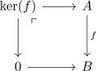

quasi-abelian category via exact category
Proposition
Let $\mathcal{C}$ be a \(1\) category TFAE:
- $\mathcal{C}$ is quasi-abelian category
- $\mathcal{C}$ is 1-finitely bicomplete category and has a welldefined maximal exact structure where a morphism $f$ is a projection iff

is bicartesian analogously for injections